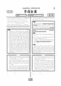

문제지


시험지를 먼저 풀어 보세요. 등급컷·표준점수·난이도는 흐리게 가려 뒀어요.
시험지를 먼저 풀어 보세요. 점수와 인원 수치는 흐리게 가려 뒀어요.
| 영역 | 응시자 | 가장 많은 구간 | 최고 구간 |
|---|---|---|---|
| 언어이해 | 15,690 | 45~50 | 75~80 |
법학전문대학원협의회가 발표한 법학적성시험 채점결과의 표준점수 급간별 인원으로 계산했습니다. 구간은 아래 점수 이상, 위 점수 미만입니다.
발행 기관: 법학전문대학원협의회(LEET). 파일 위치: 이 사이트가 보관한 사본. 저작권은 발행 기관에 있습니다. 원본과 다르거나 게시 중단이 필요하면 연락처로 알려 주세요. 등급컷 출처 구분은 데이터 원칙에서 설명합니다.